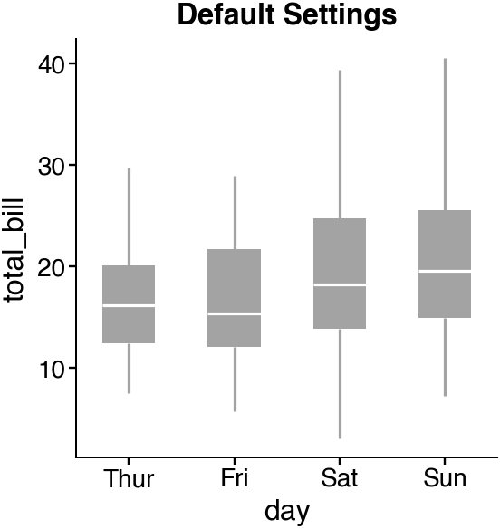
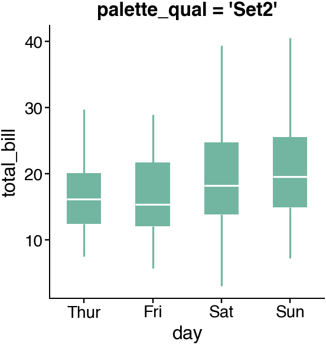
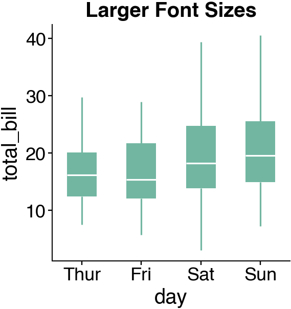
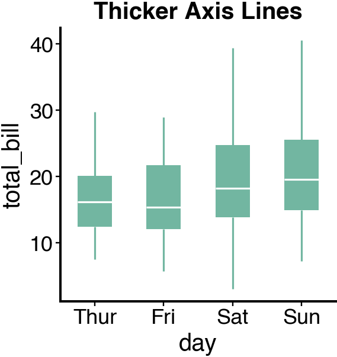
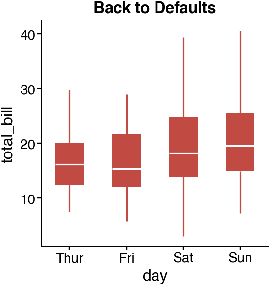
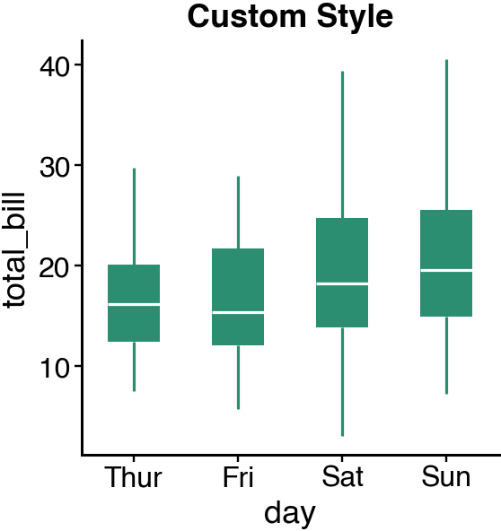
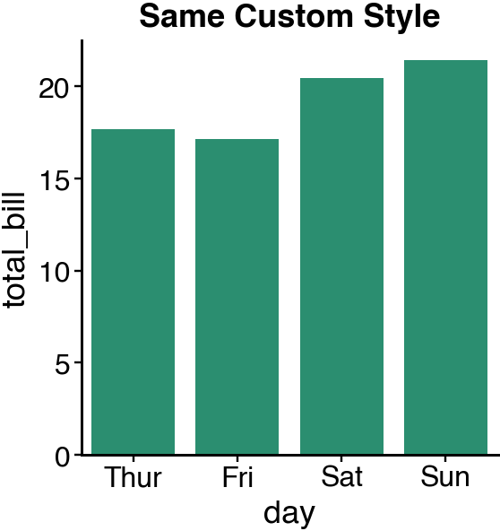
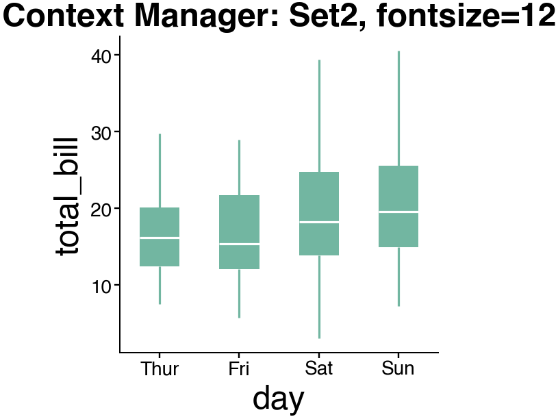
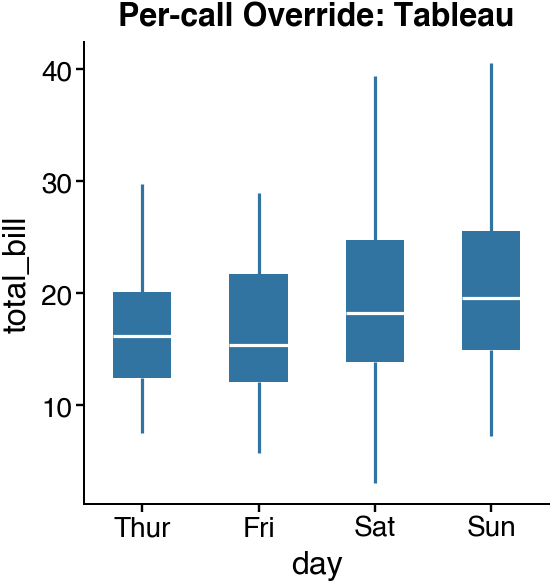

Note
Go to the end to download the full example code.
settings¶
Configure global defaults for cnsplots.
cnsplots provides a settings module to customize global defaults for palettes, font sizes, line widths, and verbosity. Changes to settings affect all subsequent plotting calls.
Load packages¶
import seaborn as sns
import cnsplots as cns
tips = sns.load_dataset("tips")
View current settings¶
The settings object shows all configurable parameters.
print(cns.settings)
CNSSettings(
palette_qual='Ecotyper1',
palette_seq='gnuplot',
fontsize_title=8,
fontsize_legend=7,
linewidth_axes=0.5,
verbosity=1
)
Access individual settings¶
Each setting can be accessed directly.
print(f"palette_qual: {cns.settings.palette_qual}")
print(f"palette_seq: {cns.settings.palette_seq}")
print(f"fontsize_title: {cns.settings.fontsize_title}")
print(f"fontsize_legend: {cns.settings.fontsize_legend}")
print(f"linewidth_axes: {cns.settings.linewidth_axes}")
print(f"verbosity: {cns.settings.verbosity}")
palette_qual: Ecotyper1
palette_seq: gnuplot
fontsize_title: 8
fontsize_legend: 7
linewidth_axes: 0.5
verbosity: 1
Plot with default settings¶
First, let’s see how plots look with default settings.
cns.figure(150, 150, [cns.GRAY])
ax = cns.boxplot(data=tips, x="day", y="total_bill")
ax.set_title("Default Settings")

Boxplots represent the median and bottom and upper quartiles; whiskers correspond to the 1.5 times the interquartile range.
Text(0.5, 1.0, 'Default Settings')
Change the default palette¶
Set a different qualitative palette for all subsequent plots.
cns.settings.palette_qual = "Set2"
cns.figure(150, 150)
ax = cns.boxplot(data=tips, x="day", y="total_bill")
ax.set_title("palette_qual = 'Set2'")

Boxplots represent the median and bottom and upper quartiles; whiskers correspond to the 1.5 times the interquartile range.
Text(0.5, 1.0, "palette_qual = 'Set2'")
Change font sizes¶
Increase font sizes for larger figures or presentations.
cns.settings.fontsize_title = 10
cns.settings.fontsize_legend = 9
cns.figure(150, 150)
ax = cns.boxplot(data=tips, x="day", y="total_bill")
ax.set_title("Larger Font Sizes")

Boxplots represent the median and bottom and upper quartiles; whiskers correspond to the 1.5 times the interquartile range.
Text(0.5, 1.0, 'Larger Font Sizes')
Change axis line width¶
Make axis lines thicker or thinner.
cns.settings.linewidth_axes = 1.0
cns.figure(150, 150)
ax = cns.boxplot(data=tips, x="day", y="total_bill")
ax.set_title("Thicker Axis Lines")

Boxplots represent the median and bottom and upper quartiles; whiskers correspond to the 1.5 times the interquartile range.
Text(0.5, 1.0, 'Thicker Axis Lines')
Reset all settings to defaults¶
Use reset() to restore all settings to their original values.
cns.settings.reset()
cns.figure(150, 150)
ax = cns.boxplot(data=tips, x="day", y="total_bill")
ax.set_title("Back to Defaults")

Boxplots represent the median and bottom and upper quartiles; whiskers correspond to the 1.5 times the interquartile range.
Text(0.5, 1.0, 'Back to Defaults')
Suppress output with verbosity¶
Set verbosity to 0 to suppress print statements from cnsplots functions.
cns.settings.verbosity = 0
# Functions that would normally print will now be silent
# (This is useful for batch processing or notebooks)
Restore verbosity¶
cns.settings.verbosity = 1
Combine multiple settings¶
Configure multiple settings for a custom style.
cns.settings.palette_qual = "Dark2"
cns.settings.palette_seq = "parula"
cns.settings.fontsize_title = 9
cns.settings.fontsize_legend = 8
cns.settings.linewidth_axes = 0.75
cns.figure(150, 150)
ax = cns.boxplot(data=tips, x="day", y="total_bill")
ax.set_title("Custom Style")

Boxplots represent the median and bottom and upper quartiles; whiskers correspond to the 1.5 times the interquartile range.
Text(0.5, 1.0, 'Custom Style')
Settings persist across calls¶
Once set, settings apply to all subsequent plots.
cns.figure(150, 150)
ax = cns.barplot(data=tips, x="day", y="total_bill")
ax.set_title("Same Custom Style")

Text(0.5, 1.0, 'Same Custom Style')
Temporarily override settings with context manager¶
Use settings.context() to apply temporary settings that
automatically revert when the block exits.
cns.settings.reset()
with cns.settings.context(fontsize_title=12, palette_qual="Set2"):
cns.figure(150, 150)
ax = cns.boxplot(data=tips, x="day", y="total_bill")
ax.set_title("Context Manager: Set2, fontsize=12")
# Settings are restored after the context block
print(f"After context: fontsize_title={cns.settings.fontsize_title}")
print(f"After context: palette_qual={cns.settings.palette_qual}")

Boxplots represent the median and bottom and upper quartiles; whiskers correspond to the 1.5 times the interquartile range.
After context: fontsize_title=8
After context: palette_qual=Ecotyper1
Override settings per-call¶
You can still override settings for individual calls.
cns.figure(150, 150, color_cycle="Tableau")
ax = cns.boxplot(data=tips, x="day", y="total_bill")
ax.set_title("Per-call Override: Tableau")

Boxplots represent the median and bottom and upper quartiles; whiskers correspond to the 1.5 times the interquartile range.
Text(0.5, 1.0, 'Per-call Override: Tableau')
Reset for clean state¶
cns.settings.reset()
print("Settings reset to defaults:")
print(cns.settings)
Settings reset to defaults:
CNSSettings(
palette_qual='Ecotyper1',
palette_seq='gnuplot',
fontsize_title=8,
fontsize_legend=7,
linewidth_axes=0.5,
verbosity=1
)
Total running time of the script: (0 minutes 0.626 seconds)